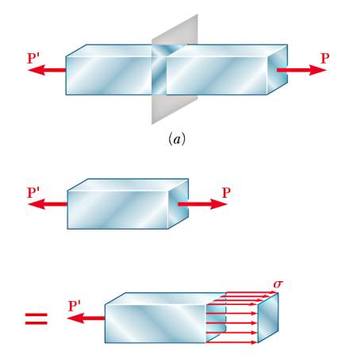

Materyel Mekaniği - 3
Normal ve Kesme (Shear) Stresleri
Bir öğeyi (member), onun üzerindeki stresi analiz etmenin yollarından biri bu öğe içine bir düzlem koyulduğunu hayal etmek, alttaki gibi [4, sf. 26],

Öğe iki yanından $P$ ile çekiliyor, ve bunun stres etkileri hayali düzlem üzerinde $\sigma$ olarak görülüyor. Üstteki etki en temel versiyon, düzlem uygulanan $P$'ye tam dik, bu sebeple hesabı basit $\sigma = P / A$, ki $A$ düzlemin öğeyi kestiği noktadaki alanı, ve kesme $\tau = 0$ çünkü uygulanan kuvvetin dikey bileşeni sıfır.
Fakat analiz düzlemin öğeyi belli bir açıyla kestiği şekilde de yapılabilirdi. Bu durumda $P$'nin dikey ve yatay bilesenleri farklı olur,

Görülen $\theta$ açısı için
$$ F = P \cos \theta, \quad V = P \sin \theta $$
Ayrıca $F,V$ kuvvetlerinin etki ettiği alan da farklıdır, ona $A_\theta$ diyelim, dikey kesimdeki alan $A_0$ olsun, o zaman $A_0 = A_\theta \cos \theta$.
Yeni düzlem için $\sigma,\tau$ ne olur? Hesaplayalım,
$$ \sigma = \frac{F}{A_\theta}, \quad \tau = \frac{V}{A_\theta} $$
$$ \sigma = \frac{P \cos \theta}{A_0 / \cos\theta}, \quad \tau = \frac{P \sin \theta}{A_0 / \cos\theta} $$
$$ \sigma = \frac{P}{A_0} \cos^2 \theta \quad \tau = \frac{P}{A_0} \sin\theta \cos\theta $$
Son iki formüle bakarsak, $\sigma$'nin en yüksek değerinin $\theta=0$'da olacağını görebiliriz, çünkü o noktada kosinüs 1 değerindedir. $\tau$ için en yüksek değer 45 derecede oluyor, o zaman her iki maksimumu $\sigma_m, \tau_m$ diyelim,
$$ \sigma_m = \frac{P}{A_0} $$
$$ \tau_m = \frac{P}{A_0} \sin 45^{\circ} \cos 45^{\circ} = \frac{P}{2 A_0} $$
Çok Boyutta Kuvvetler
Giriş dersinden hatırlarsak kuvvet uygulanan kirişlerdeki deformasyon maddenin özellikleriyle ilişkilendirilebiliyordu, bunun için birim alandaki kuvvet ve birim boya tekabül eden uzama gözönüne alınıyordu. Çok boyuta geçerken ilk olarak birim alan bazlı içsel kuvvetlerin alttaki gibi genel bir nesneye nasıl uygulanacağını görelim [5, sf. 184].

Bir $O$ noktasına etki eden iç kuvvetleri incelemek için o noktadan geçen bir düzlem hayal edebiliriz, düzlemi temsil eden ona dik normal vektör $n$ olsun. Eğer düzlemi ufak parçalara bölsek ve her bölgeye etki eden kuvvetleri ölçsek oradaki etki eden kuvvetlerin birinden diğerine değişebileceğini görürdük.

Eğer benzer şekilde $O$ merkezli bir ufak kare $\Delta A$ ele alsak orada etki eden bir $\Delta F$ olacaktır. $\Delta F$'nin düzleme dik olması gerekmez, herhangi bir açıda duran bir vektör olabilir, cismin altındaki kuvvetler üstten alta doğru bastıran kuvvetlerden daha büyükse $\Delta F$ onların tek bir noktadaki bir tür birleşimi olduğu için yukarı doğru gösteriyor olurdu muhakkak.
Şimdi stres vektörü kavramını tanıştıralım; eğer $\Delta A$ limite doğru giderse
$$ T_n = \lim_{\Delta A \to 0} \frac{\Delta F}{\Delta A} $$
büyüklüğü stres vektörünü tanımlar.
Dikkat edersek $\Delta F$ büyüklüğü düzlemin duruşuna, yani $n$'ye bağlı olduğu için özellikle $n$ ibaresini $T$ sembolüne ekledik; her değişik $n$ değişik bir $T_n$ değerini verebileceği için.
Herhangi bir düzlem kullanabiliriz demiştik, fakat tekrarlanabilirlik, net ifade açısından her eksene dik birer düzlem, toplam üç tane kullanmak daha iyi olacak. Örnek $x$ eksenine dik olan bir düzlem altta,
Daha önce gördüğümüz $\Delta F$'in üstteki resimde düzleme göre bileşenlerine ayıracağız, bunlar $\Delta F_x$, $\Delta F_y$, $\Delta F_z$. Baktığımız alan ise kenarları $\Delta y$ ve $\Delta z$ olan bir dikdörtgen, alan $\Delta A_x$ ise (notasyon olarak dik olduğumüz eksenin sembolünü verdik) $\Delta A_x = \Delta y \Delta z$.
Daha önce olduğu gibi burada da limit tekniğini kullanabiliriz, $\Delta A_x \to 0$ olacak. Fakat yine notasyonel olarak referans eksen yönündeki strese $\sigma$ sembolü üzerinden normal stres , o eksene dik yani düzleme paralel olan bileşenlere $\tau$ üzerinden kesme (shear) stresi adlarını vereceğiz. Limitlerle beraber,
$$ \sigma_x = \lim_{\Delta A_x \to 0 } \frac{\Delta F_x}{\Delta A_x} $$
$$ \tau_{xy} = \lim_{\Delta A_x \to 0 } \frac{\Delta F_y}{\Delta A_x} $$
$$ \tau_{xz} = \lim_{\Delta A_x \to 0 } \frac{\Delta F_z}{\Delta A_x} $$
Aynı düzlemle kesme tekniğini iki diğer eksen $y,z$ için de kullanırsak, ve benzer hesapları yaparsak oradan da altı tane stres değeri elde ederiz, toplam dokuz tane, hepsi bir arada bir matris içinde,
$$ \left[\begin{array}{rrr} \sigma_x & \tau_{xy} & \tau_{xz} \\ \tau_{yx} & \sigma_y & \tau_{yz} \\ \tau_{zx} & \tau_{zy} & \sigma_z \end{array}\right] $$
Üç Boyutta Eşyönlü (Isotropic) Stres-Gerinim İlişkisi
Şimdi bir kütleye uygulanan stres sonucu ortaya çıkan gerinimi üç boyut için formülize edeceğiz [3, sf. 871]. Maddenin lineer elastik ve eşyönlü olduğu farz edilecek, yani uygulanan bir stres farklı yönlerde etkilere sebep olursa bu etki her yönde eşit şekilde ortaya çıkacak. Aradığımız formül Hooke Kanunu'nun üç boyutlu hali, buna bazı kaynaklar (listelenen şartlar için) Genelleştirilmiş Hooke Kanunu ismi de verebiliyor.
Bir gövdeyi her eksen üzerinden $\sigma_x$, $\sigma_y$, $\sigma_z$ streslerine tabi tutacağız ve sonuçları inceleyeceğiz. Mesela temel Hooke Kanunu $\sigma = E \epsilon$'den yola çıkarak $\epsilon_x^x = \sigma_x / E$ diyebiliriz, $\epsilon_x^x$ büyüklüğündeki üstsimge gerinimin $x$ stresi sebebiyle olduğunu söylüyor, diğerleri de olacak.

Fakat stres-gerinim ilişkisi sadece tek eksenle kısıtlı değil. Bir eksende stres uyguladığımızda bunun diğer eksenler üzerinde de etkileri olacaktır. Çünkü madde bir yöne uzayıp şekil değiştirir fakat diğer eksenlerde ufalma olacağı için o eksenlerde eksi yönde gerinim olur.
Mesela üstte ortadaki resmi düşünürsek, $\sigma_y$ stresi uygulandığında $x$ yönünde bir negatif gerinim olur, çünkü madde o eksen bağlamında içe doğru daralır, şekil değiştirir, bunu formül
$$ \epsilon_x^y = \frac{- v \sigma_y}{E} $$
ile gösterebiliriz ki $v$ Poisson oranı. Dikkat $y$ yönündeki stresin etkisi sadece $E$ sabiti ile değil $v/E$ sabiti ile $y$ eksenine yansıyor. Bu normal olmalı çünkü bir eksene direk uygulanan stres ve onun aynı eksende yol açtığı gerinim diğer eksenlerdeki yan etki gibi görülebilecek gerinimler ile aynı olamaz.
Benzer şekilde $z$ stresinin yol açtığı gerinim
$$ \epsilon_x^z = \frac{- v \sigma_z}{E} $$
Tüm bu gerinimleri toplarsak $x$ eksenindeki toplam gerinim elde edilir,
$$ \epsilon_x = \epsilon_x^x + \epsilon_x^y + \epsilon_x^z $$
$$ = \frac{\sigma_x}{E} - \frac{v \sigma_y}{E} - \frac{v \sigma_z}{E} $$
Benzer şekilde $y$ ve $z$ yönündeki gerinimler de elde edilebilir,
$$ \epsilon_y = \frac{\sigma_y}{E} - \frac{v \sigma_x}{E} - \frac{v \sigma_z}{E} $$
$$ \epsilon_z = \frac{\sigma_z}{E} - \frac{v \sigma_x}{E} - \frac{v \sigma_y}{E} $$
Son üç denklemi birleştirip stresler solda olacak şekilde düzenlersek,
$$ \sigma_x = \frac{E}{(1+v)(1-2v)} [\epsilon_x (1-v) + v \epsilon_y + v \epsilon_z ] $$
$$ \sigma_y = \frac{E}{(1+v)(1-2v)} [ v \epsilon_x + \epsilon_y (1-v) + v \epsilon_z ] $$
$$ \sigma_z = \frac{E}{(1+v)(1-2v)} [v \epsilon_x + v \epsilon_y + \epsilon_z (1-v) ] $$
Ayrıca normal stresler için kullanılan Hooke Kanunu $\sigma = E \epsilon$ benzer bir şekilde kesme (shear) stresi ve kesme gerinimi için de geçerlidir, ama sabit $E$ yerine $G$ kullanılır,
$$ \tau = G \gamma $$
$G$ sabitine Kesme Genliği (Shear Modulus) ismi veriliyor, birazdan nasıl türetildiğini göreceğiz. 0 zaman üç boyutta ortaya çıkabilecek üç kesme stresi
$$ \tau_{xy} = G \gamma_{xy} \qquad \tau_{yz} = G \gamma_{yz} \qquad \tau_{zx} = G \gamma_{zx} $$
$G$ ile $E$ arasında bir ilişki var, bu formül
$$ G = \frac{E}{2(1+v)} $$
Bu formülün nasıl türetildiğini birazdan göreceğiz.
Şimdi üstteki tüm formülleri matris formunda bir araya koyabiliriz,
$$ \left[\begin{array}{c} \sigma_x \\ \sigma_y \\ \sigma_z \\ \tau_{xy} \\ \tau_{yz} \\ \tau_{zx} \end{array}\right] = \frac{E}{(1+v)(1-2v)} \left[\begin{array}{cccccc} 1-v & v & v & 0 & 0 & 0 \\ v & 1-v & v & 0 & 0 & 0 \\ v & v & 1-v & 0 & 0 & 0 \\ 0 & 0 & 0 & \dfrac{1-2v}{2} & 0 & 0 \\ 0 & 0 & 0 & 0 & \dfrac{1-2v}{2} & 0 \\ 0 & 0 & 0 & 0 & 0 & \dfrac{1-2v}{2} \end{array}\right] \left[\begin{array}{c} \epsilon_x \\ \epsilon_y \\ \epsilon_z \\ \gamma_{xy} \\ \gamma_{yz} \\ \gamma_{zx} \end{array}\right] $$
Matrisin sol alt kısmının simetri sebebiyle sağ üst kısım ile aynı olduğuna dikkat.
Eğer gerinim değişkenlerini eşitliğin solunda stresleri sağda tutmak istersek,
üstteki matrisin tersini bulmamız lazım [8, sf. 161], sembolik ters alma
işlemini sympy ile yapabiliriz,
import sympy as sym
E, v = sym.symbols('E v')
matrix = E/((1+v)*(1-2*v))*sym.Matrix([[1-v,v,v,0,0,0],
[v,1-v,v,0,0,0],
[v,v,1-v,0,0,0],
[0,0,0,(1-2*v)/2,0,0],
[0,0,0,0,(1-2*v)/2,0],
[0,0,0,0,0,(1-2*v)/2]])
sym.latex(matrix.inv())
$$ \left[\begin{matrix}\dfrac{1}{E} & - \dfrac{v}{E} & - \dfrac{v}{E} & 0 & 0 & 0\\- \dfrac{v}{E} & \dfrac{1}{E} & - \dfrac{v}{E} & 0 & 0 & 0\\- \dfrac{v}{E} & - \dfrac{v}{E} & \dfrac{1}{E} & 0 & 0 & 0\\0 & 0 & 0 & \dfrac{2 v + 2}{E} & 0 & 0\\0 & 0 & 0 & 0 & \dfrac{2 v + 2}{E} & 0\\0 & 0 & 0 & 0 & 0 & \dfrac{2 v + 2}{E}\end{matrix}\right] $$
Bir basitleştirme daha yapılabilir, bunu kendimiz görebiliyoruz, $1/E$ dışarı çekelim, hepsini bir araya koyalım,
$$ \left[\begin{array}{c} \epsilon_x \\ \epsilon_y \\ \epsilon_z \\ \gamma_{xy} \\ \gamma_{yz} \\ \gamma_{zx} \end{array}\right] = \frac{1}{E} \left[\begin{array}{cccccc} 1 & -v & -v & 0 & 0 & 0 \\ -v & 1 & -v & 0 & 0 & 0 \\ -v & -v & 1 & 0 & 0 & 0 \\ 0 & 0 & 0 & 2(1+v) & 0 & 0 \\ 0 & 0 & 0 & 0 & 2(1+v) & 0 \\ 0 & 0 & 0 & 0 & 0 & 2(1+v) \end{array}\right] \left[\begin{array}{c} \sigma_x \\ \sigma_y \\ \sigma_z \\ \tau_{xy} \\ \tau_{yz} \\ \tau_{zx} \end{array}\right] $$
Düzlem Stresi (Plane Stres)
Eğer bir gövde sadece iki boyutta strese tabi tutuluyorsa bu gövdenin "düzlem stresi" durumunda olduğu söylenir [3, sf. 70]. Bu tür stres / gerinimde $\sigma_z = \tau_{xz} = \tau_{yz} = 0$'dir yani üçüncü boyut $z$ eksenine dönük hiçbir aksiyon yoktur. Bu durumda Genel Hooke Kanunu alttaki üç denkleme indirgenebilir,
$$ \epsilon_x = \frac{1}{E} (\sigma_x - v \sigma_y ) $$
$$ \epsilon_y = \frac{1}{E} (\sigma_y - v \sigma_x ) $$
$$ \gamma_{xy} = \frac{1}{G} \tau_{xy} $$
Üç boyutlu durumda olduğu gibi üstteki formülleri matris formunda gösterebiliriz,
$$ \left[\begin{array}{c} \epsilon_{x} \\ \epsilon_{y} \\ \gamma_{xy} \end{array}\right] = \frac{1}{E} \left[\begin{array}{ccc} 1 & -v & 0 \\ -v & 1 & 0 \\ 0 & 0 & 2(1+v) \end{array}\right] \left[\begin{array}{c} \sigma_x \\ \sigma_y \\ \tau_{xy} \end{array}\right] $$
Yine bir yer değiştirme işlemi yapılabilir, üstteki matrisin tersini alırsak stresler sola geçer,
$$ \left[\begin{array}{c} \sigma_x \\ \sigma_y \\ \tau_{xy} \end{array}\right] = \frac{E}{(1-v)^2} \left[\begin{array}{ccc} 1 & v & 0 \\ v & 1 & 0 \\ 0 & 0 & \dfrac{(1-v)}{2} \end{array}\right] \left[\begin{array}{c} \epsilon_{x} \\ \epsilon_{y} \\ \gamma_{xy} \end{array}\right] $$
Bazı formülasyonlarda üstteki matrisin çarpan sabitin böleninde $(1+v)$ görülebiliyor, bu durumda $(1-v)^2=(1+v)(1-v)$ olduğunu hatırlayalım, ve ona göre matrisin tüm öğeleri $(1-v)$ ile bölünmüş olacaktır, farketmez, her iki form da aynı sonucu verir.
Kaynaklar
[2] Bayramlı, Normal Diferansiyel Denklemler, Trigonometri
[3] Craig, Mechanics of Materials, Third Edition
[4] Mazurek, Mechanics of Materials, 6th Edition
[5] Crandall, An Introduction to the Mechanics of Solids
Yukarı